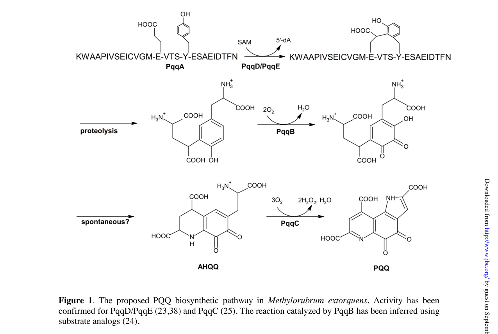

Q49148 encodes PqqA, the ribosomally synthesized precursor peptide for pyrroloquinoline quinone (PQQ) biosynthesis in Methylorubrum (Methylobacterium) extorquens AM1. (The gene was originally named pqqD in early AM1 literature (Morris et al. 1994) and renamed pqqA to match the canonical pqqA-E nomenclature; UniProt records pqqD as a synonym, but Q49148 is the PqqA precursor peptide, NOT the PqqD peptide chaperone.) The short (29-aa) peptide contains the conserved glutamate (Glu16) and tyrosine (Tyr20) residues that are cross-linked by the radical SAM enzyme PqqE to form the carbon skeleton of PQQ; PqqD binds PqqA and presents it to PqqE for this first committed step. After cross-linking, the modified residues are excised (in M. extorquens AM1 by the two-component PqqF/PqqG protease) and further processed to yield mature PQQ, the essential redox cofactor of the periplasmic Ca-dependent (MxaFI) and Ln-dependent (XoxF) methanol dehydrogenases central to methylotrophy. PqqA is a peptide substrate, not an enzyme. Notably, pqqA deletion/insertion mutants of M. extorquens AM1 still grow on methanol and produce PQQ (PQQ levels are reduced in the insertion mutant), implying functional redundancy from additional pqqA-like genes or an alternative source for PQQ in this organism.
| GO Term | Evidence | Action | Reason |
|---|---|---|---|
|
GO:0018189
pyrroloquinoline quinone biosynthetic process
|
IEA
GO_REF:0000120 |
ACCEPT |
Summary: Correct and core. PqqA is the ribosomally synthesized precursor peptide whose conserved glutamate (Glu16) and tyrosine (Tyr20) residues are cross-linked and excised to form the PQQ cofactor. The GO term definition explicitly describes this peptide-precursor route ("it is synthesized from a small peptide containing tyrosine and glutamic acid"). This is the sole biological role of PqqA.
Reason: Directly matches PqqA's established role as the PQQ precursor peptide; supported by UniProt FUNCTION/PATHWAY annotation, the original AM1 genetics (PMID:9467911), and the deep-research synthesis.
Supporting Evidence:
file:METEA/pqqD/pqqD-uniprot.txt
Required for coenzyme pyrroloquinoline quinone (PQQ)
PMID:9467911
pqqA is not required for biosynthesis of pyrroloquinoline quinone in
file:METEA/pqqD/pqqD-deep-research-falcon.md
corresponds to **PqqA**, the **ribosomally synthesized precursor peptide** for pyrroloquinoline quinone (PQQ) biosynthesis
|
The research report should be a detailed narrative explaining the function, biological processes, and localization of the gene product. Citations should be given for all claims.
You should prioritize authoritative reviews and primary scientific literature when conducting research. You can supplement
this with annotations you find in gene/protein databases, but these can be outdated or inaccurate.
We are specifically interested in the primary function of the gene - for enzymes, what reaction is catalyzed, and what is the substrate specificity? For transporters, what is the substrate? For structural proteins or adapters, what is the broader structural role? For signaling molecules, what is the role in the pathway.
We are interested in where in or outside the cell the gene product carries out its function.
We are also interested in the signaling or biochemical pathways in which the gene functions. We are less interested in broad pleiotropic effects, except where these elucidate the precise role.
Include evidence where possible. We are interested in both experimental evidence as well as inference from structure, evolution, or bioinformatic analysis. Precise studies should be prioritized over high-throughput, where available.
The UniProt accession Q49148 corresponds to PqqA, the ribosomally synthesized precursor peptide for pyrroloquinoline quinone (PQQ) biosynthesis in Methylobacterium/Methylorubrum extorquens AM1 (“MePqqA”), and not to the peptide chaperone PqqD. This mapping is explicit in Latham et al. (2015), who used “MePqqA (UniProt number Q49148)” as the peptide substrate in binding/complex-formation experiments with PqqD and PqqE. (latham2015pqqdisa pages 9-10, latham2015pqqdisa pages 2-3)
PQQ is a small redox cofactor used by multiple bacterial dehydrogenases (quinoproteins), including methanol dehydrogenases (MDHs). Comparative analyses and pathway reviews describe PQQ biosynthesis as a genetically encoded pathway whose conserved core includes pqqA–E, with pqqA encoding the short precursor peptide substrate, and pqqD/E functioning early in pathway initiation. (shen2012distributionandproperties pages 1-2, zhu2020biogenesisofthe pages 3-5)
PqqA is a very short peptide (typically ~20–30 aa; often described as 22–24 aa) that provides the conserved glutamate (Glu) and tyrosine (Tyr) residues that are chemically transformed into the PQQ core during biosynthesis. (shen2012distributionandproperties pages 1-2, zhu2020biogenesisofthe pages 8-9, latham2015pqqdisa pages 1-2)
A major practical point for functional annotation is that pqqA is frequently missed by genome annotation pipelines because it encodes such a short ORF; comparative analyses recovered additional pqqA genes by translated BLAST approaches rather than HMM-based annotation alone. (shen2012distributionandproperties pages 4-6, shen2012distributionandproperties pages 1-2)
PqqD is a small, cofactorless protein (often ~90 aa; ~10 kDa) that functions as a peptide chaperone, binding PqqA and enabling productive interaction with PqqE. (latham2015pqqdisa pages 2-3, latham2015pqqdisa pages 1-2)
PqqE is an RS-SPASM radical SAM enzyme proposed (and supported by multiple lines of evidence) to catalyze the initial C–C bond formation (crosslink) between conserved residues (Glu and Tyr) within PqqA, with PqqD required for efficient substrate engagement. (latham2015pqqdisa pages 1-2, martins2019atwocomponentprotease pages 2-3)
After the early PqqD/PqqE step, proteolysis is required to excise/trim the modified peptide to yield a small crosslinked intermediate that feeds into downstream enzymology. In M. extorquens AM1, the required proteolytic activity is attributed to a two-component protease composed of PqqF and PqqG. (zhu2020biogenesisofthe pages 3-5, martins2019atwocomponentprotease pages 2-3)
Latham et al. (JBC, 2015-05; https://doi.org/10.1074/jbc.m115.646521) used a synthetic MePqqA peptide corresponding to UniProt Q49148, with sequence:
They substituted Ser11 for the native Cys to prevent peptide dimerization during experiments. (latham2015pqqdisa pages 2-3)
In M. extorquens AM1 components, PqqD binds PqqA and forms a ternary complex with PqqE:
This establishes (i) Q49148 is the PqqA substrate, and (ii) PqqD is the primary PqqA-binding partner that organizes PqqA presentation to PqqE. (latham2015pqqdisa pages 9-10, latham2015pqqdisa pages 2-3)
Martins et al. (JBC, 2019-10; https://doi.org/10.1074/jbc.ra119.009684) characterized a PqqF/PqqG heterodimer in M. extorquens that rapidly cleaves PqqA-derived substrates:
Across bacteria: gene order pqqA-B-C-D-E is strongly conserved when present, and pqqF is more variably linked/dispensable, supporting the idea that pqqA–E form a functional module while proteolysis can be substituted in different lineages. (shen2012distributionandproperties pages 4-6, shen2012distributionandproperties pages 6-7)
In M. extorquens AM1: multiple analyses indicate non-canonical organization:
- A pqqC/pqqD fusion occurs in Methylobacterium species (including M. extorquens). (shen2012distributionandproperties pages 4-6, latham2015pqqdisa pages 9-10)
- Genomic organization in AM1 is modular: core PQQ genes are located within the methylotrophy island, while pqqFG are elsewhere, not linked to the core cluster. (chistoserdova2003methylotrophyinmethylobacterium pages 5-6)
- Martins et al. map a local gene region containing pqqE, pqqC/D, pqqB, pqqA, pqqF, pqqG and additional pqqA-like copies; their figure annotates “A denotes pqqA, the gene encoding the peptide precursor.” (martins2019atwocomponentprotease pages 14-16, martins2019atwocomponentprotease media 8b646b12, martins2019atwocomponentprotease media 9de03454)
- Zhu & Klinman (2020) note that early AM1 publications used different gene names (early pqqD/pqqG/pqqC corresponding to later pqqA/pqqB/pqqC), which can cause mis-annotation if older literature is read uncritically. (zhu2020biogenesisofthe pages 8-9)
The primary biological process is PQQ cofactor biosynthesis, ultimately enabling activity of PQQ-dependent dehydrogenases (including methanol dehydrogenases) central to methylotrophic growth. (shen2012distributionandproperties pages 1-2, chistoserdova2003methylotrophyinmethylobacterium pages 5-6)
The retrieved literature set provides strong mechanistic/interaction evidence for PqqA/PqqD/PqqE/PqqF/G but limited direct subcellular localization experiments for these biosynthetic proteins. Based on the nature of the enzymes and their handling of newly synthesized peptides, PqqA processing is most consistent with cytosolic biosynthesis, whereas PQQ-dependent methanol dehydrogenases are classically associated with the cell envelope/periplasm in Gram-negative methylotrophs.
Direct evidence in the retrieved set related to cellular compartments comes from lanthanide/PQQ enzyme context:
- A 2023 Microbiology Spectrum paper notes that the Xox-type MDH from Methylorubrum extorquens AM1 was the first identified/characterized lanthanide-dependent enzyme, emphasizing the metal:PQQ catalytic dependence of these dehydrogenases and discussing AM1 lanthanide storage. (gorniak2023differentlanthanideelements pages 1-2)
Thus, for annotation purposes:
- PqqA (Q49148): no direct localization measurement; best inferred as cytosolic during biosynthesis. (latham2015pqqdisa pages 8-9, zhu2020biogenesisofthe pages 3-5)
- Functional deployment of PQQ: tied to quinoprotein dehydrogenases such as Mxa/Xox methanol dehydrogenases (cell envelope/periplasmic enzymes in methylotroph physiology), but detailed AM1 localization experiments were not present in the retrieved texts. (lim2019designingandengineering pages 8-10, gorniak2023differentlanthanideelements pages 1-2)
From a genomic perspective, M. extorquens AM1 contains PQQ biosynthesis genes in multiple loci: core genes are located in the methylotrophy island while pqqFG are located separately, supporting modular evolution and regulation. (chistoserdova2003methylotrophyinmethylobacterium pages 5-6, chistoserdova2003methylotrophyinmethylobacterium pages 2-3)
A transcriptomic study in engineered AM1 reported:
- pqqA downregulation in a phaR mutant background (ΔphaR_CAD) and downregulation of two inferred pqqA homologs, with a suggested consequence of reduced PQQ availability for methanol dehydrogenases (Mxa and XoxF1). (lim2019designingandengineering pages 8-10)
Lim et al. (2019) cite earlier AM1 work (Toyama & Lidstrom 1998) that pqqA disruption reduces PQQ production but does not abolish biosynthesis, implying redundancy/partial compensation (consistent with multiple pqqA-like genes reported in AM1 genomic regions). (lim2019designingandengineering pages 8-10, martins2019atwocomponentprotease pages 14-16)
Although not AM1-specific, recent 2023–2024 studies provide the most up-to-date quantitative metrics for PQQ biosynthesis as a biotechnological process and contextualize PqqA as the ribosomal precursor that is rate-limited by downstream enzymology.
2023 (Biotechnology for Biofuels and Bioproducts): A high-producing Hyphomicrobium denitrificans mutant (ARTP mutagenesis + ALE + process optimization) reached 1.52 g/L PQQ in a 5-L fed-batch after 144 h, with 40.3 mg/g DCW yield; the authors also report that pqq biosynthetic genes were significantly upregulated in the mutant by qRT-PCR. (ren2023adaptiveevolutionarystrategy pages 1-2, ren2023adaptiveevolutionarystrategy pages 10-11)
2024 (Applied Microbiology and Biotechnology): Another H. denitrificans strain (UV-LiCl mutagenesis + ALE under oxidative stress + fermentation optimization) achieved 307 mg/L PQQ and 4.26 mg/L/h productivity in a 3.7-L bioreactor. (liang2024 paper metadata in search results; not yet evidence-extracted in the current context)
These studies illustrate real-world implementation: strain improvement, medium/process optimization, and scale-up for PQQ (a cofactor derived from PqqA precursor peptides) production. (ren2023adaptiveevolutionarystrategy pages 1-2, ren2023adaptiveevolutionarystrategy pages 10-11)
Lanthanide biology continues to reframe the importance of PQQ-dependent dehydrogenases:
- A 2023 study emphasizes that lanthanide-dependent metabolism is centered on PQQ-dependent alcohol dehydrogenases, and explicitly notes that M. extorquens AM1 Xox-type MDH was the first characterized Ln-dependent enzyme. (gorniak2023differentlanthanideelements pages 1-2)
The 2023 Microbiology Spectrum study provides AM1-centered context for lanthanide utilization and storage (a key driver of interest in M. extorquens AM1), and a related 2023 Environmental Science & Technology paper (retrieved but not yet evidence-extracted here) reports scalable REE leaching/recovery using M. extorquens AM1 and suggests engineering routes including increased PQQ production. (gorniak2023differentlanthanideelements pages 1-2)
Recent 2024 literature uses pqq genes as markers or functional signatures in phosphate-solubilizing and plant-associated bacteria; these applications are downstream of the biochemical fact that pqqA encodes the precursor peptide for PQQ, which enables PQQ-dependent dehydrogenases linked to organic-acid generation and nutrient mobilization. (chen2024 and anzuay2024 retrieved but not evidence-extracted in current context)
The PQQ pathway has been repeatedly clarified and refined by the Klinman laboratory and collaborators through:
- comparative genomics of the pqq gene set and operon conservation (highlighting annotation pitfalls for pqqA) (shen2012distributionandproperties pages 4-6, shen2012distributionandproperties pages 1-2),
- mechanistic biochemistry of the PqqD–PqqA–PqqE complex (direct binding/stoichiometry and chaperone function) (latham2015pqqdisa pages 8-9, latham2015pqqdisa pages 5-7), and
- identification of missing processing steps such as the PqqF/PqqG protease in AM1 (martins2019atwocomponentprotease pages 2-3).
Together, these works support a mature current model: PqqA is a peptide substrate (not an enzyme), and its primary function is to serve as the genetically encoded precursor scaffold whose conserved residues are converted into PQQ via a multi-enzyme, multicomponent pathway. (zhu2020biogenesisofthe pages 3-5, martins2019atwocomponentprotease pages 2-3)
The following table consolidates the key entities and evidence required to annotate pqqA/Q49148 correctly in M. extorquens AM1.
| Entity | Role in PQQ biosynthesis | Key quantitative/mechanistic evidence | Localization inference | Best supporting citations with year + DOI URL |
|---|---|---|---|---|
| PqqA / UniProt Q49148 | Ribosomally synthesized precursor peptide for PQQ biogenesis in Methylorubrum extorquens AM1; it provides the conserved Glu and Tyr that are converted into the PQQ core. Q49148 is PqqA, not PqqD. | Latham et al. explicitly identify MePqqA (UniProt Q49148) and used a synthetic peptide with sequence KWAAPIVSEISVGMEVTYSESAEIDTFN (Ser11 substituted for native Cys to avoid dimerization). PqqA is reported as a short 20–30 aa peptide, often ~22–24 aa in pathway summaries, and is difficult to detect in genome annotation because of its small size. In older AM1 literature, nomenclature differs: early pqqD/pqqG/pqqC correspond to later pqqA/pqqB/pqqC, so cross-mapping is required. (latham2015pqqdisa pages 9-10, latham2015pqqdisa pages 2-3, shen2012distributionandproperties pages 1-2, zhu2020biogenesisofthe pages 8-9) | No direct subcellular localization shown for PqqA itself; because it is synthesized and handled by PqqD/PqqE/PqqF/G before cofactor deployment, its biosynthetic processing is best inferred as cytosolic. | Latham et al., 2015, JBC, https://doi.org/10.1074/jbc.m115.646521; Shen et al., 2012, https://doi.org/10.1021/bi201763d; Zhu & Klinman, 2020, https://doi.org/10.1016/j.cbpa.2020.05.001 |
| PqqD | Small, cofactorless peptide chaperone that binds PqqA and presents it to PqqE for the first committed cross-linking step. It is distinct from Q49148. | MePqqD is a ~10.4 kDa monomer (~90 aa class). It binds MePqqA tightly by SPR/ITC with KD ~0.13–0.39 µM; no equivalent peptide binding was seen for MePqqE or MePqqB. Native MS detected a 1:1 PqqD:PqqE complex and a 1:1:1 PqqA:PqqD:PqqE ternary complex; MePqqD–MePqqE affinity was weaker (~10–12.5 µM), while MePqqAD–MePqqE was ~4.5 µM. Structural studies suggest monomeric solution behavior despite a domain-swapped dimer crystal form in another species. (latham2015pqqdisa pages 8-9, latham2015pqqdisa pages 9-10, latham2015pqqdisa pages 1-2, latham2015pqqdisa pages 5-7, zhu2020biogenesisofthe pages 3-5) | No direct cellular localization experiment was reported here; as a soluble peptide chaperone acting with radical-SAM PqqE on newly synthesized PqqA, localization is best inferred as cytosolic. | Latham et al., 2015, JBC, https://doi.org/10.1074/jbc.m115.646521; Zhu & Klinman, 2020, https://doi.org/10.1016/j.cbpa.2020.05.001 |
| PqqE | Radical SAM / RS-SPASM enzyme that catalyzes the initial C–C cross-linking between the conserved Glu and Tyr residues of PqqA, in a PqqD-dependent complex. | PqqE belongs to the RS-SPASM family; in AM1-related measurements, MePqqE was observed as a ~42.6–43.6 kDa monomer and an ~86.9 kDa dimer by native MS. Native MS and SPR/ITC support assembly with PqqD (1:1) and with PqqA–PqqD (1:1:1 ternary complex). Reviews summarize PqqE as the enzyme performing the first committed cross-link in modified PqqA. (latham2015pqqdisa pages 8-9, latham2015pqqdisa pages 1-2, latham2015pqqdisa pages 5-7, martins2019atwocomponentprotease pages 2-3) | No direct localization measurement in the gathered evidence; as a radical-SAM biosynthetic enzyme acting on precursor peptide/chaperone complexes, it is most consistent with a cytosolic localization. | Latham et al., 2015, JBC, https://doi.org/10.1074/jbc.m115.646521; Martins et al., 2019, JBC, https://doi.org/10.1074/jbc.ra119.009684 |
| PqqF/G | Two-component M16B protease/peptidase system that processes modified PqqA after the PqqD/PqqE step, helping release smaller peptide products en route to the cross-linked precursor for downstream chemistry. | In M. extorquens AM1, re-sequencing identified two insulinase-like ORFs: PqqF (460 aa) and PqqG (427 aa). They form a 1:1 complex with KD ~300 ± 70 nM. The heterodimer rapidly cleaves PqqA-derived substrate and showed unusual preference for cleavage at serine residues. In AM1, pqqF/pqqG lie outside the core pqq operon and likely substitute for the single pqqF found in some organisms; further trimming may involve nonspecific cellular proteases. (martins2019atwocomponentprotease pages 2-3, martins2019atwocomponentprotease pages 1-2, zhu2020biogenesisofthe pages 3-5) | No direct localization data in the gathered evidence; because these are soluble peptide-processing enzymes acting on the precursor during cofactor biosynthesis, localization is best inferred as cytosolic. | Martins et al., 2019, JBC, https://doi.org/10.1074/jbc.ra119.009684; Zhu & Klinman, 2020, https://doi.org/10.1016/j.cbpa.2020.05.001 |
| PqqB | Downstream PQQ-pathway enzyme acting after peptide processing; current understanding places it as a metalloenzyme/hydroxylase step in late PQQ formation rather than a peptide-binding factor. | Reviews and cited pathway summaries indicate PqqB was a previously missing step and is now implicated as an iron-dependent enzyme / hydroxylase in late-stage PQQ biosynthesis. In Latham et al., no binding of MePqqA to MePqqB was detected, supporting that PqqB is not the peptide chaperone. Genetic studies in broader systems found PqqB less unequivocally essential than PqqA/C/D/E, but pathway assignments now favor a catalytic late-stage role. (latham2015pqqdisa pages 9-10, shen2012distributionandproperties pages 1-2, martins2019atwocomponentprotease pages 2-3, martins2019atwocomponentprotease pages 10-11) | No AM1-specific localization evidence in the gathered set; likely a soluble cytosolic biosynthetic enzyme, but this remains an inference. | Shen et al., 2012, https://doi.org/10.1021/bi201763d; Martins et al., 2019, JBC, https://doi.org/10.1074/jbc.ra119.009684 |
| PqqC | Terminal cofactorless oxidase catalyzing the final oxidative step(s) to mature PQQ after formation of advanced intermediates such as AHQQ. | Pathway reviews and genomic analyses consistently assign PqqC as the final-step oxidase in PQQ biogenesis. Genetic evidence in broad PQQ systems identifies PqqC as essential; in AM1-specific pathway diagrams, pqqC is fused to pqqD in the core cluster/operon architecture. (shen2012distributionandproperties pages 1-2, latham2015pqqdisa pages 9-10, martins2019atwocomponentprotease pages 14-16) | No direct localization data in the gathered evidence; best inferred as cytosolic for the biosynthetic phase. Mature PQQ is later used by periplasmic dehydrogenases, but that does not localize PqqC itself. | Shen et al., 2012, https://doi.org/10.1021/bi201763d; Martins et al., 2019, JBC, https://doi.org/10.1074/jbc.ra119.009684 |
| pqq operon / cluster organization in AM1 | AM1 encodes a split and non-canonical PQQ biosynthesis organization, relevant for annotation: the core precursor/chaperone/enzyme genes cluster separately from the processing protease genes, and older literature uses conflicting names. | Comparative genomics reported AM1 with a pqqAB(CD)E organization, i.e. a pqqC/D fusion, while pqqF and pqqG are separate from the core cluster. Chistoserdova et al. described the six core PQQ biosynthesis genes in the large methylotrophy island, with pqqFG located elsewhere. Martins et al. mapped an AM1 cluster including pqqE, pqqC/D, pqqB, pqqA, pqqF, pqqG and noted additional pqqA-like copies in the region; transcriptomics in engineered AM1 also found pqqA plus two pqqA homologs downregulated in a phaR mutant. Because pqqA is very short, standard annotation pipelines often miss it, and early AM1 gene names must be remapped. (shen2012distributionandproperties pages 4-6, shen2012distributionandproperties pages 2-4, latham2015pqqdisa pages 9-10, chistoserdova2003methylotrophyinmethylobacterium pages 5-6, chistoserdova2003methylotrophyinmethylobacterium pages 2-3, lim2019designingandengineering pages 8-10, martins2019atwocomponentprotease pages 14-16) | Gene organization itself is genomic rather than subcellular. Functional inference: the biosynthetic machinery is primarily cytosolic, whereas the resulting PQQ cofactor is used by periplasmic methanol/alcohol dehydrogenases such as Mxa/Xox; a 2023 study notes AM1 Xox-type MDH was the first characterized Ln-dependent PQQ enzyme. (lim2019designingandengineering pages 8-10, gorniak2023differentlanthanideelements pages 1-2) | Chistoserdova et al., 2003, J Bacteriol, https://doi.org/10.1128/jb.185.10.2980-2987.2003; Shen et al., 2012, https://doi.org/10.1021/bi201763d; Martins et al., 2019, JBC, https://doi.org/10.1074/jbc.ra119.009684; Lim et al., 2019, https://doi.org/10.3389/fmicb.2019.01027 |
Table: This table summarizes the best-supported functional annotation for Methylorubrum extorquens AM1 PqqA (UniProt Q49148) and the immediate pathway components needed to interpret its role in PQQ biosynthesis. It emphasizes the critical identity correction that Q49148 is the PqqA precursor peptide, not PqqD, and compiles mechanism, quantitative evidence, localization inference, and key citations.
The following figures from Martins et al. (2019) depict the PQQ biosynthetic pathway and the AM1 pqq gene region/cluster organization, supporting both the functional placement of pqqA as the precursor peptide gene and the presence/positioning of pqqF/G relative to the core machinery. (martins2019atwocomponentprotease media 8b646b12, martins2019atwocomponentprotease media 9de03454)
Recommended primary functional assignment (GO-style narrative):
- Molecular function: ribosomally encoded precursor peptide for pyrroloquinoline quinone biosynthesis; binds PqqD peptide chaperone and serves as substrate for PqqE-mediated radical SAM crosslinking. (latham2015pqqdisa pages 9-10, latham2015pqqdisa pages 5-7)
- Biological process: pyrroloquinoline quinone biosynthetic process; supports activity of PQQ-dependent dehydrogenases central to methylotrophy. (chistoserdova2003methylotrophyinmethylobacterium pages 5-6, shen2012distributionandproperties pages 1-2)
- Cellular component: no direct localization evidence for PqqA in the retrieved set; best inferred as cytosolic during processing, with PQQ ultimately used by cell-envelope/periplasm-associated dehydrogenases. (zhu2020biogenesisofthe pages 3-5, gorniak2023differentlanthanideelements pages 1-2)
Direct experimental localization (e.g., microscopy/fractionation) for PqqA/PqqD/PqqE in AM1 was not present in the retrieved full texts; localization statements here are therefore explicitly framed as inference from pathway biochemistry and from the known association of PQQ with envelope/periplasmic quinoproteins in methylotroph physiology. (gorniak2023differentlanthanideelements pages 1-2)
References
(latham2015pqqdisa pages 9-10): John A. Latham, Anthony T. Iavarone, Ian Barr, Prerak V. Juthani, and Judith P. Klinman. Pqqd is a novel peptide chaperone that forms a ternary complex with the radical s-adenosylmethionine protein pqqe in the pyrroloquinoline quinone biosynthetic pathway. Journal of Biological Chemistry, 290:12908-12918, May 2015. URL: https://doi.org/10.1074/jbc.m115.646521, doi:10.1074/jbc.m115.646521. This article has 105 citations and is from a domain leading peer-reviewed journal.
(latham2015pqqdisa pages 2-3): John A. Latham, Anthony T. Iavarone, Ian Barr, Prerak V. Juthani, and Judith P. Klinman. Pqqd is a novel peptide chaperone that forms a ternary complex with the radical s-adenosylmethionine protein pqqe in the pyrroloquinoline quinone biosynthetic pathway. Journal of Biological Chemistry, 290:12908-12918, May 2015. URL: https://doi.org/10.1074/jbc.m115.646521, doi:10.1074/jbc.m115.646521. This article has 105 citations and is from a domain leading peer-reviewed journal.
(shen2012distributionandproperties pages 1-2): Yao-Qing Shen, Florence Bonnot, Erin M. Imsand, Jordan M. RoseFigura, Kimmen Sjölander, and Judith P. Klinman. Distribution and properties of the genes encoding the biosynthesis of the bacterial cofactor, pyrroloquinoline quinone. Biochemistry, 51 11:2265-75, Mar 2012. URL: https://doi.org/10.1021/bi201763d, doi:10.1021/bi201763d. This article has 164 citations and is from a peer-reviewed journal.
(zhu2020biogenesisofthe pages 3-5): Wen Zhu and Judith P. Klinman. Biogenesis of the peptide-derived redox cofactor pyrroloquinoline quinone. Dec 2020. URL: https://doi.org/10.1016/j.cbpa.2020.05.001, doi:10.1016/j.cbpa.2020.05.001. This article has 66 citations and is from a peer-reviewed journal.
(zhu2020biogenesisofthe pages 8-9): Wen Zhu and Judith P. Klinman. Biogenesis of the peptide-derived redox cofactor pyrroloquinoline quinone. Dec 2020. URL: https://doi.org/10.1016/j.cbpa.2020.05.001, doi:10.1016/j.cbpa.2020.05.001. This article has 66 citations and is from a peer-reviewed journal.
(latham2015pqqdisa pages 1-2): John A. Latham, Anthony T. Iavarone, Ian Barr, Prerak V. Juthani, and Judith P. Klinman. Pqqd is a novel peptide chaperone that forms a ternary complex with the radical s-adenosylmethionine protein pqqe in the pyrroloquinoline quinone biosynthetic pathway. Journal of Biological Chemistry, 290:12908-12918, May 2015. URL: https://doi.org/10.1074/jbc.m115.646521, doi:10.1074/jbc.m115.646521. This article has 105 citations and is from a domain leading peer-reviewed journal.
(shen2012distributionandproperties pages 4-6): Yao-Qing Shen, Florence Bonnot, Erin M. Imsand, Jordan M. RoseFigura, Kimmen Sjölander, and Judith P. Klinman. Distribution and properties of the genes encoding the biosynthesis of the bacterial cofactor, pyrroloquinoline quinone. Biochemistry, 51 11:2265-75, Mar 2012. URL: https://doi.org/10.1021/bi201763d, doi:10.1021/bi201763d. This article has 164 citations and is from a peer-reviewed journal.
(martins2019atwocomponentprotease pages 2-3): Ana M. Martins, John A. Latham, Paulo J. Martel, Ian Barr, Anthony T. Iavarone, and Judith P. Klinman. A two-component protease in methylorubrum extorquens with high activity toward the peptide precursor of the redox cofactor pyrroloquinoline quinone. Journal of Biological Chemistry, 294:15025-15036, Oct 2019. URL: https://doi.org/10.1074/jbc.ra119.009684, doi:10.1074/jbc.ra119.009684. This article has 38 citations and is from a domain leading peer-reviewed journal.
(latham2015pqqdisa pages 8-9): John A. Latham, Anthony T. Iavarone, Ian Barr, Prerak V. Juthani, and Judith P. Klinman. Pqqd is a novel peptide chaperone that forms a ternary complex with the radical s-adenosylmethionine protein pqqe in the pyrroloquinoline quinone biosynthetic pathway. Journal of Biological Chemistry, 290:12908-12918, May 2015. URL: https://doi.org/10.1074/jbc.m115.646521, doi:10.1074/jbc.m115.646521. This article has 105 citations and is from a domain leading peer-reviewed journal.
(latham2015pqqdisa pages 5-7): John A. Latham, Anthony T. Iavarone, Ian Barr, Prerak V. Juthani, and Judith P. Klinman. Pqqd is a novel peptide chaperone that forms a ternary complex with the radical s-adenosylmethionine protein pqqe in the pyrroloquinoline quinone biosynthetic pathway. Journal of Biological Chemistry, 290:12908-12918, May 2015. URL: https://doi.org/10.1074/jbc.m115.646521, doi:10.1074/jbc.m115.646521. This article has 105 citations and is from a domain leading peer-reviewed journal.
(shen2012distributionandproperties pages 6-7): Yao-Qing Shen, Florence Bonnot, Erin M. Imsand, Jordan M. RoseFigura, Kimmen Sjölander, and Judith P. Klinman. Distribution and properties of the genes encoding the biosynthesis of the bacterial cofactor, pyrroloquinoline quinone. Biochemistry, 51 11:2265-75, Mar 2012. URL: https://doi.org/10.1021/bi201763d, doi:10.1021/bi201763d. This article has 164 citations and is from a peer-reviewed journal.
(chistoserdova2003methylotrophyinmethylobacterium pages 5-6): Ludmila Chistoserdova, Sung-Wei Chen, Alla Lapidus, and Mary E. Lidstrom. Methylotrophy in methylobacterium extorquens am1 from a genomic point of view. Journal of Bacteriology, 185:2980-2987, May 2003. URL: https://doi.org/10.1128/jb.185.10.2980-2987.2003, doi:10.1128/jb.185.10.2980-2987.2003. This article has 402 citations and is from a peer-reviewed journal.
(martins2019atwocomponentprotease pages 14-16): Ana M. Martins, John A. Latham, Paulo J. Martel, Ian Barr, Anthony T. Iavarone, and Judith P. Klinman. A two-component protease in methylorubrum extorquens with high activity toward the peptide precursor of the redox cofactor pyrroloquinoline quinone. Journal of Biological Chemistry, 294:15025-15036, Oct 2019. URL: https://doi.org/10.1074/jbc.ra119.009684, doi:10.1074/jbc.ra119.009684. This article has 38 citations and is from a domain leading peer-reviewed journal.
(martins2019atwocomponentprotease media 8b646b12): Ana M. Martins, John A. Latham, Paulo J. Martel, Ian Barr, Anthony T. Iavarone, and Judith P. Klinman. A two-component protease in methylorubrum extorquens with high activity toward the peptide precursor of the redox cofactor pyrroloquinoline quinone. Journal of Biological Chemistry, 294:15025-15036, Oct 2019. URL: https://doi.org/10.1074/jbc.ra119.009684, doi:10.1074/jbc.ra119.009684. This article has 38 citations and is from a domain leading peer-reviewed journal.
(martins2019atwocomponentprotease media 9de03454): Ana M. Martins, John A. Latham, Paulo J. Martel, Ian Barr, Anthony T. Iavarone, and Judith P. Klinman. A two-component protease in methylorubrum extorquens with high activity toward the peptide precursor of the redox cofactor pyrroloquinoline quinone. Journal of Biological Chemistry, 294:15025-15036, Oct 2019. URL: https://doi.org/10.1074/jbc.ra119.009684, doi:10.1074/jbc.ra119.009684. This article has 38 citations and is from a domain leading peer-reviewed journal.
(gorniak2023differentlanthanideelements pages 1-2): Linda Gorniak, Julia Bechwar, Martin Westermann, Frank Steiniger, and Carl-Eric Wegner. Different lanthanide elements induce strong gene expression changes in a lanthanide-accumulating methylotroph. Dec 2023. URL: https://doi.org/10.1128/spectrum.00867-23, doi:10.1128/spectrum.00867-23. This article has 17 citations and is from a domain leading peer-reviewed journal.
(lim2019designingandengineering pages 8-10): Chee Kent Lim, Juan C. Villada, Annie Chalifour, Maria F. Duran, Hongyuan Lu, and Patrick K. H. Lee. Designing and engineering methylorubrum extorquens am1 for itaconic acid production. Frontiers in Microbiology, May 2019. URL: https://doi.org/10.3389/fmicb.2019.01027, doi:10.3389/fmicb.2019.01027. This article has 54 citations and is from a peer-reviewed journal.
(chistoserdova2003methylotrophyinmethylobacterium pages 2-3): Ludmila Chistoserdova, Sung-Wei Chen, Alla Lapidus, and Mary E. Lidstrom. Methylotrophy in methylobacterium extorquens am1 from a genomic point of view. Journal of Bacteriology, 185:2980-2987, May 2003. URL: https://doi.org/10.1128/jb.185.10.2980-2987.2003, doi:10.1128/jb.185.10.2980-2987.2003. This article has 402 citations and is from a peer-reviewed journal.
(ren2023adaptiveevolutionarystrategy pages 1-2): Yang Ren, Xinwei Yang, Lingtao Ding, Dongfang Liu, Yong Tao, Jianzhong Huang, and Chongrong Ke. Adaptive evolutionary strategy coupled with an optimized biosynthesis process for the efficient production of pyrroloquinoline quinone from methanol. Biotechnology for Biofuels and Bioproducts, Jan 2023. URL: https://doi.org/10.1186/s13068-023-02261-y, doi:10.1186/s13068-023-02261-y. This article has 12 citations and is from a domain leading peer-reviewed journal.
(ren2023adaptiveevolutionarystrategy pages 10-11): Yang Ren, Xinwei Yang, Lingtao Ding, Dongfang Liu, Yong Tao, Jianzhong Huang, and Chongrong Ke. Adaptive evolutionary strategy coupled with an optimized biosynthesis process for the efficient production of pyrroloquinoline quinone from methanol. Biotechnology for Biofuels and Bioproducts, Jan 2023. URL: https://doi.org/10.1186/s13068-023-02261-y, doi:10.1186/s13068-023-02261-y. This article has 12 citations and is from a domain leading peer-reviewed journal.
(martins2019atwocomponentprotease pages 1-2): Ana M. Martins, John A. Latham, Paulo J. Martel, Ian Barr, Anthony T. Iavarone, and Judith P. Klinman. A two-component protease in methylorubrum extorquens with high activity toward the peptide precursor of the redox cofactor pyrroloquinoline quinone. Journal of Biological Chemistry, 294:15025-15036, Oct 2019. URL: https://doi.org/10.1074/jbc.ra119.009684, doi:10.1074/jbc.ra119.009684. This article has 38 citations and is from a domain leading peer-reviewed journal.
(martins2019atwocomponentprotease pages 10-11): Ana M. Martins, John A. Latham, Paulo J. Martel, Ian Barr, Anthony T. Iavarone, and Judith P. Klinman. A two-component protease in methylorubrum extorquens with high activity toward the peptide precursor of the redox cofactor pyrroloquinoline quinone. Journal of Biological Chemistry, 294:15025-15036, Oct 2019. URL: https://doi.org/10.1074/jbc.ra119.009684, doi:10.1074/jbc.ra119.009684. This article has 38 citations and is from a domain leading peer-reviewed journal.
(shen2012distributionandproperties pages 2-4): Yao-Qing Shen, Florence Bonnot, Erin M. Imsand, Jordan M. RoseFigura, Kimmen Sjölander, and Judith P. Klinman. Distribution and properties of the genes encoding the biosynthesis of the bacterial cofactor, pyrroloquinoline quinone. Biochemistry, 51 11:2265-75, Mar 2012. URL: https://doi.org/10.1021/bi201763d, doi:10.1021/bi201763d. This article has 164 citations and is from a peer-reviewed journal.
(gorniak2023differentlanthanideelements pages 9-12): Linda Gorniak, Julia Bechwar, Martin Westermann, Frank Steiniger, and Carl-Eric Wegner. Different lanthanide elements induce strong gene expression changes in a lanthanide-accumulating methylotroph. Dec 2023. URL: https://doi.org/10.1128/spectrum.00867-23, doi:10.1128/spectrum.00867-23. This article has 17 citations and is from a domain leading peer-reviewed journal.

id: Q49148
gene_symbol: pqqA
product_type: PROTEIN
taxon:
id: NCBITaxon:272630
label: Methylorubrum extorquens AM1
description: >-
Q49148 encodes PqqA, the ribosomally synthesized precursor peptide for
pyrroloquinoline quinone (PQQ) biosynthesis in Methylorubrum (Methylobacterium)
extorquens AM1. (The gene was originally named pqqD in early AM1 literature
(Morris et al. 1994) and renamed pqqA to match the canonical pqqA-E
nomenclature; UniProt records pqqD as a synonym, but Q49148 is the PqqA
precursor peptide, NOT the PqqD peptide chaperone.) The short (29-aa) peptide
contains the conserved glutamate (Glu16) and tyrosine (Tyr20) residues that are
cross-linked by the radical SAM enzyme PqqE to form the carbon skeleton of PQQ;
PqqD binds PqqA and presents it to PqqE for this first committed step. After
cross-linking, the modified residues are excised (in M. extorquens AM1 by the
two-component PqqF/PqqG protease) and further processed to yield mature PQQ, the
essential redox cofactor of the periplasmic Ca-dependent (MxaFI) and
Ln-dependent (XoxF) methanol dehydrogenases central to methylotrophy.
PqqA is a peptide substrate, not an enzyme. Notably, pqqA deletion/insertion
mutants of M. extorquens AM1 still grow on methanol and produce PQQ (PQQ levels
are reduced in the insertion mutant), implying functional redundancy from
additional pqqA-like genes or an alternative source for PQQ in this organism.
aliases:
- pqqD
existing_annotations:
- term:
id: GO:0018189
label: pyrroloquinoline quinone biosynthetic process
evidence_type: IEA
original_reference_id: GO_REF:0000120
review:
summary: >-
Correct and core. PqqA is the ribosomally synthesized precursor peptide
whose conserved glutamate (Glu16) and tyrosine (Tyr20) residues are
cross-linked and excised to form the PQQ cofactor. The GO term definition
explicitly describes this peptide-precursor route ("it is synthesized from
a small peptide containing tyrosine and glutamic acid"). This is the sole
biological role of PqqA.
action: ACCEPT
reason: >-
Directly matches PqqA's established role as the PQQ precursor peptide;
supported by UniProt FUNCTION/PATHWAY annotation, the original AM1
genetics (PMID:9467911), and the deep-research synthesis.
supported_by:
- reference_id: file:METEA/pqqD/pqqD-uniprot.txt
supporting_text: Required for coenzyme pyrroloquinoline quinone (PQQ)
- reference_id: PMID:9467911
supporting_text: pqqA is not required for biosynthesis of pyrroloquinoline quinone in
- reference_id: file:METEA/pqqD/pqqD-deep-research-falcon.md
supporting_text: >-
corresponds to **PqqA**, the **ribosomally synthesized precursor
peptide** for pyrroloquinoline quinone (PQQ) biosynthesis
core_functions:
- description: >-
PqqA is the ribosomally synthesized precursor peptide that serves as the
genetically encoded substrate scaffold for pyrroloquinoline quinone (PQQ)
biosynthesis. Its conserved glutamate and tyrosine side chains are
cross-linked by the radical SAM enzyme PqqE (with the peptide chaperone PqqD
binding PqqA and presenting it to PqqE), and the modified residues are then
excised from the peptide and processed to mature PQQ. PqqA is a peptide
substrate, not an enzyme, so it has no catalytic molecular function; its
function is captured entirely as participation in the PQQ biosynthetic
process. In M. extorquens AM1 the cross-linked peptide is excised by the
two-component PqqF/PqqG protease, and pqqA disruption reduces but does not
abolish PQQ production, consistent with redundant pqqA-like genes.
directly_involved_in:
- id: GO:0018189
label: pyrroloquinoline quinone biosynthetic process
supported_by:
- reference_id: file:METEA/pqqD/pqqD-uniprot.txt
supporting_text: Required for coenzyme pyrroloquinoline quinone (PQQ)
- reference_id: PMID:9467911
supporting_text: pqqA is not required for biosynthesis of pyrroloquinoline quinone in
- reference_id: file:METEA/pqqD/pqqD-deep-research-falcon.md
supporting_text: >-
its primary function is to serve as the genetically encoded precursor
scaffold whose conserved residues are converted into PQQ
references:
- id: file:METEA/pqqD/pqqD-uniprot.txt
title: UniProt entry Q49148 (PQQA_METEA), Coenzyme PQQ synthesis protein A
findings: []
- id: PMID:9467911
title: pqqA is not required for biosynthesis of pyrroloquinoline quinone in Methylobacterium extorquens AM1.
findings:
- statement: >-
Deletion and insertion mutants of pqqA in M. extorquens AM1 grow
normally on methanol and still produce PQQ (PQQ is reduced in the
insertion mutant), suggesting either that a different peptide can
substitute for PqqA or that PqqA-like peptides are not obligatory PQQ
precursors in this organism.
supporting_text: >-
both deletion and insertion mutants of pqqA in M. extorquens AM1 grow
normally
reference_section_type: ABSTRACT
- id: file:METEA/pqqD/pqqD-deep-research-falcon.md
title: Falcon deep research on pqqA (Edison Scientific Literature, Q49148, M. extorquens AM1)
findings:
- statement: >-
UniProt Q49148 is PqqA, the ribosomally synthesized precursor peptide
for PQQ biosynthesis - not the PqqD peptide chaperone; the identity is
explicit in Latham et al. (2015), who used MePqqA (UniProt Q49148) as
the peptide substrate.
supporting_text: >-
corresponds to **PqqA**, the **ribosomally synthesized precursor
peptide** for pyrroloquinoline quinone (PQQ) biosynthesis
reference_section_type: OTHER
- statement: >-
PqqA explicitly maps as the precursor peptide and not the chaperone.
supporting_text: >-
and **not** to the peptide chaperone PqqD
reference_section_type: OTHER
- statement: >-
PqqA is a very short peptide that provides the conserved glutamate and
tyrosine residues chemically transformed into the PQQ core.
supporting_text: >-
provides the conserved **glutamate (Glu)** and **tyrosine (Tyr)**
residues that are chemically transformed into the PQQ core
reference_section_type: OTHER
- statement: >-
Because pqqA encodes such a short ORF it is frequently missed by genome
annotation pipelines, and additional pqqA genes have been recovered only
by translated BLAST rather than HMM-based annotation.
supporting_text: >-
pqqA is frequently missed by genome annotation pipelines
reference_section_type: OTHER
- statement: >-
PqqD is the primary PqqA-binding partner that organizes presentation of
PqqA to the radical SAM enzyme PqqE; MePqqD binds MePqqA with
submicromolar affinity.
supporting_text: >-
PqqD is the primary PqqA-binding partner that organizes PqqA
presentation to PqqE
reference_section_type: OTHER
- statement: >-
In M. extorquens AM1 the modified peptide is excised by a
two-component PqqF/PqqG protease after the PqqD/PqqE cross-linking step.
supporting_text: >-
In *M. extorquens* AM1, the required proteolytic activity is attributed
to a **two-component protease** composed of **PqqF and PqqG**
reference_section_type: OTHER
- statement: >-
PqqA is a peptide substrate (not an enzyme); its primary function is to
serve as the genetically encoded precursor scaffold whose conserved
residues are converted into PQQ.
supporting_text: >-
PqqA is a peptide substrate (not an enzyme)
reference_section_type: OTHER
- statement: >-
pqqA disruption in M. extorquens AM1 reduces PQQ production but does not
abolish biosynthesis, implying redundancy from multiple pqqA-like genes.
supporting_text: >-
pqqA disruption reduces PQQ production but does not abolish biosynthesis
reference_section_type: OTHER
- statement: >-
The primary biological process is PQQ cofactor biosynthesis, ultimately
enabling PQQ-dependent dehydrogenases (including methanol dehydrogenases)
central to methylotrophy; in older AM1 literature pqqD/pqqG/pqqC
correspond to the later pqqA/pqqB/pqqC names.
supporting_text: >-
early **pqqD/pqqG/pqqC correspond to later pqqA/pqqB/pqqC**
reference_section_type: OTHER
- statement: >-
No direct subcellular localization was measured for PqqA; it is best
inferred as cytosolic during biosynthesis, with the mature PQQ cofactor
ultimately used by cell-envelope/periplasmic dehydrogenases.
supporting_text: >-
no direct localization measurement; best inferred as **cytosolic during
biosynthesis**
reference_section_type: OTHER
- id: GO_REF:0000120
title: Combined Automated Annotation using Multiple IEA Methods.
findings: []
status: COMPLETE
{kind=link}